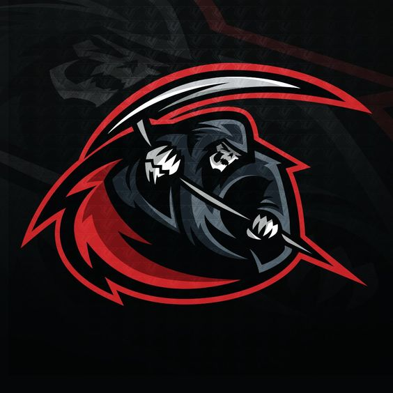

<!DOCTYPE html>


<html>
<html lang"en">
  <head>
  <meta name="viewport" content="width=device-width, initial-scale=1">
   <meta charset="utf-8"> 
   <meta name="viewpoint" content="width=device-width, initial-scale=1">
   <title Scare Security style="background-color: rgba(255, 0, 0, 0.459);"></title>
  <link href="mystyle.css" rel="stylesheet" type="text/css"
   </html>
  <body style="background-color: black;"> 
    <button style="background-color:#5FFB17	;" class="tablinks" onclick="OpenCity(event, 'American')" id="defualtOpen">ITS</button>
      <button style="background-color:#5FFB17	;" class="tablinks" onclick="OpenCity(event, 'American')" id="defualtOpen">FUCKING</button>
      <button style="background-color:#5FFB17	;" class="tablinks" onclick="OpenCity(event, 'American')" id="defualtOpen">AMERICAN</button>
      <button style="background-color:#5FFB17	;" class="tablinks" onclick="OpenCity(event, 'American')" id="defualtOpen">HACKERS</button>
       

      <h1>Hackers for civilians</h1>
      <p style="background-color:rgba(255, 0, 0, 0.459);">
      __________________________<br>
      |HACKERS FOR CIVILIANS     |<br>
      |_________________________|<br>
      </p>
      
      <p style="background-color:rgba(255, 0, 0, 0.541);">
          Why hello there, i am RE43P3R a programmer and red hat hacker with 4+ years of experince with hacking,
          there is a massive chance you found this page on github, instagram, or my .onion site if you did well
          you are going to learn a bit about me, what i do on a daily bassis, and what my belifes are when it comes
          to hacking 
      </p>
      <body>
         "
      </body>
      
      <h2 class="red-text" style="color: red;">How I Started</h2>

      <p style="background-color: rgba(255, 0, 0, 0.459);">
          well i first had an interest in OSINT, and then it went from there, during that time i had a shitty laptop,
          and something that i could most definitly not work much on, so i first started out with a vigilante org called
          F.O.G ( First Order Of Guardians) it was nice and the only way i helped was google dorking and remembering everything 
          i could at that time. further on in the while i was doing it, i had gotten enough money to build my pc and once i did 
          that then there it was, i got it, booted into linux, and started hacking and learning more as the days went on 
        </p>

          <h2 class="red-text" style="color: red;">My belifes twards hackers protecting civilians</h2>

          <p style="background-color: rgba(255, 0, 0, 0.459);">
          
          I belive not all people can be protected and or saved, but i do belive as cyber worriors we
          can all come together to form one big organization dedicated to hunting those cyber terrorists down, 
          ive been doing this ever since a young age and would like to do it, not many people belive that we are actually doing something 
          but thats wrong. we relese there info with the proper proof we need, and call the cops thus the problem is solved, i dont usually 
          focus on just one person anymore its usually a group of people who are themsleves terroists, ive spent alot of time doing this 
          and i belive with the right amount of people, and the right amount of grousp we can take down the worst of people 
          </p>

          <h2 class="red-text" style="color: red;">My background</h2>

          <p style="background-color:rgba(255, 0, 0, 0.459);">
          
            i have 4 year of experince when it comes to hacking, ive doxxed over 754 pedophiles and cyber terroists, ive arrested 4 of them. 
            when it comes to osint i am EXTREMELY good at it and i do not mean that in a narsasistic way, ive been able to fidn and locate 99.9% of my targets 
            that is also why i am known as RE43P3R... the name came from when i joined my very first vigilante organization (FOG) when i got
            about 6 months into the organization
            i was opted to be co leader of the ORG in which was the best moment of my life when it came to the hacking world. now at the time my 
            username was Skull_reaper-666 i opted reaper with my belifes because of taking out the bad in the world, but also guiding the lost 
            souls away from the darkness, while also being a lone wolf and not keeping many freinds or people i knew near me or close to me asides
            my family there wasnt much i can count. now when i did tyurn co leader i took down (43) people during this time ALONE, then i had taken down 
            3 groups alone thus the name RE43P3R was born, where 43 is the number of people taken down alone, and 3 groups taken down or doxxed 
          
          </p>

  <h2 class="red-text" style="color: red;">About my organization</h2> <br>
  
  <p style="background-color: rgba(255, 0, 0, 0.459);">
  
  what is scare sec? scare sec or scare security is a organization i made dedicated to hutning down pedophiles, rapists, social terroists, and overall
  people who try to fuck up other peoples lives, i always wanted to hunt down people and mass organizations, so when i joined the first organization i was 
  in i had grown so fascinated to the idea that i was actually doing something good for the world, so when i finally picked up and left FOG i decided why not 
  make my own organization accept filled of hackers and more programmers, the first name i came up with was KOTS this stood for (Knights of the streets) when 
  i didnt like the name and that formation failed i decided to part away from that idea and work alone, but then the idea came up in my head again thus scare 
  sec was born and organzied, i chose scare as the main word because often we would social engineer the targets into giving us their info, trace it, then use 
  some more social engineering to pressure them to where they said they were sorry, took dow whatever post was needed or took down their accounts, this was good,
  after all we did want those posts, comments, and people taken down and away from the victims, then scare became a name, after that i named it sec standing for security 
  because the people i had at the time were all red hat hackers. this meant we were all dedicated to hunting down mainly cyber terrorists but also pedos as well, 
  anyway scare sec was born and i am the leader RE43P3R or Ark_Angel43( ark or Ark_Angel for short) 
  
  </p>

  
  <h3 class="red-text" style="color: red;">How to join?</h3>
  
  <p style="background-color: rgba(255, 0, 0, 0.459);">
  
    FIND MY PROTON OR EMAIL AND CONTACT ME WITH THIS PRHASE  "DARKKEY: kD09^&&#8KDAK!0"
  </p>


<p style="font-size: 20px; color:purple;">
  <a href="cyberwar.html">Cyber Weapons</a>
  </p>

  <p style="font-size: 20px; color:purple;">
    <a href="cyberweapons.html">Cyber Weapons i built</a>
    </p>
    
    <p style="font-size: 20px; color:purple;">
      <a href="Socials.html">SOCIALS</a>
      </p>
      

  </body>
</html>      